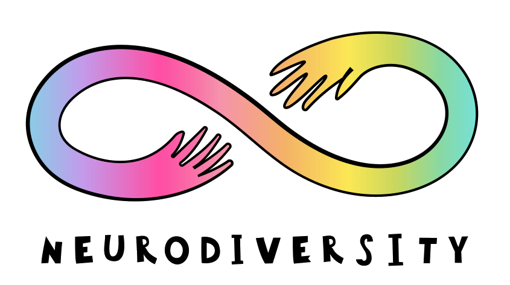
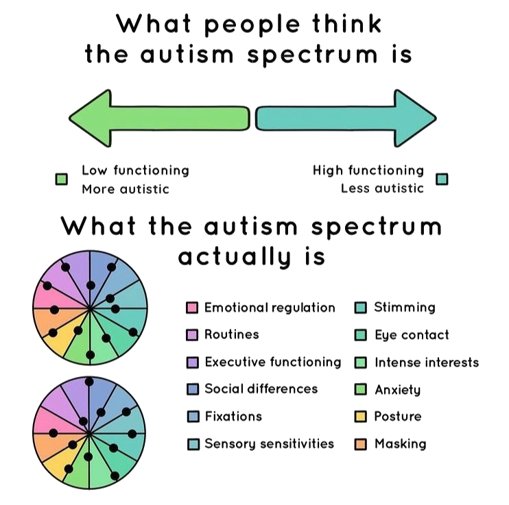
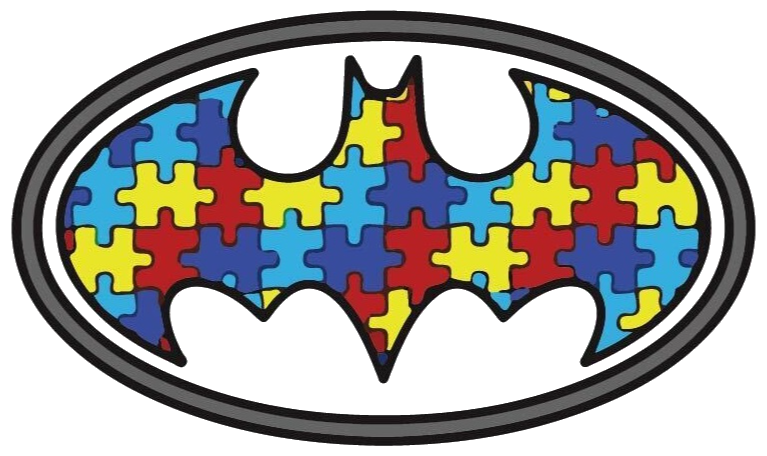
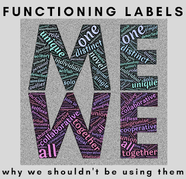
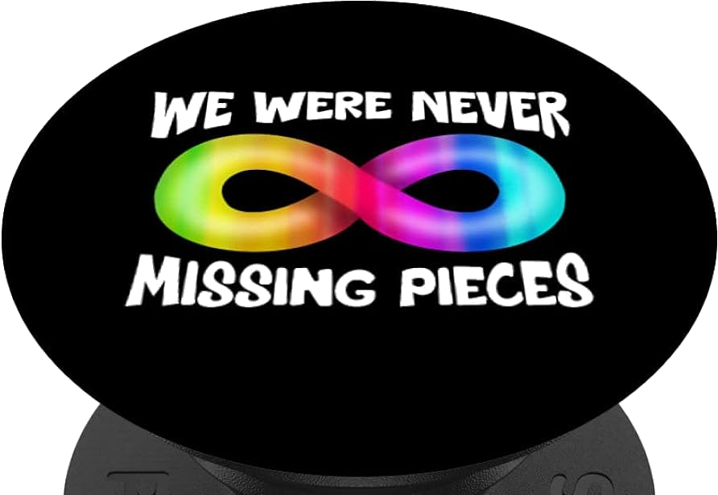
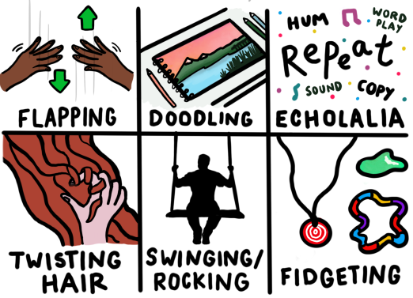

What is Autism?
Autism is a lifelong developmental disability which affects how people communicate and interact with the world. More than one in 100 people are on the autism spectrum and there are around 700,000 autistic adults and children in the UK.
It's impossible to estimate how many undiagnosed people there are but it's clearly substantial as there are many cases of diagnoses later in life.
Autism is a spectrum condition and affects people in different ways. Like all people, autistic people have their own strengths and weaknesses. The definition of Autism has changed over time and continues to change.
There is no cure and, diagnosis isn't a fix but it does help to identify triggers, can provide coping strategies and helps explain what may have thus far been the unexplainable in your life.
Autism is a spectrum condition and affects people in different ways. Like all people, autistic people have their own strengths and weaknesses. The definition of Autism has changed over time and continues to change.

It has been more than 50 years since Leo Kanner first described his classic autistic syndrome. Since then, the results of research and clinical work have helped us learn more about autism. Regardless of this recent naming of the condition, its clear that Autism has been with us for millenia...
More and more people are being diagnosed as autistic, although we still have a long way to go in creating a world that works for autistic people.
Spectrum is often replaced by constellation as spectrum implies a degree of severity across all difficulties when in fact a person may be quite challenged in one area but excel in another.

The rainbow spectrum is a common symbol used to represent the diversity of the autism community. It encompasses a range of colours to signify the wide variety of characteristics, strengths, and challenges present within the spectrum.
There is a big pile of confusion over Asperger’s, Autism and functioning labels (high and low) that causes many difficulties for parents.
The only clinical difference between Autism and Asperger’s is speech delay around speech milestones, and that does not necessarily mean mutism or selective mutism—it could literally mean partly delayed speech.

The two are inseparable past that point, because they are essentially the same thing. There is no identifiable difference between an adult diagnosed with Asperger’s and an adult with a diagnosis of High-Functioning Autism.
not to Aspbergers..
There are myths around Asperger’s that stem from the original decisions by Hans Asperger, who chose to separate the intelligent from the not-so intelligent. (The Nazi government funded and directed him, and that’s a whole other story and a reason many now avoid the term altogether.)

The High and Low Functioning labels were intended to separate out Autistics with an IQ under 70. Now though, societally functioning labels are used by people and professionals to designate one’s ability to function in society. but...
Its complete nonsense, all Autistic people are individuals.
So am I......
We are all different, and function differently on a daily basis.
Autism is Autism. Though certain people have better support structures and coping strategies than others, the underlying Autism is the same. It just affects different people differently, often with a co-morbid condition exacerbating the problem.
There are no separate High Functioning and Low Functioning people. Asperger’s and Autism are indistinguishable from each other, and so are the same. There is no mild Autism, or severe Autism; there is only Autism and the ability of the individual to prevent societal norms from crippling them.

The vagueness of all this, and the misunderstanding and myths around it, just serves to confuse Neurotypicals as well as pre- and newly diagnosed people. It puts a barrier up between all of these groups and already established Autistics.
Autistic person..
Then, as the saying goes, you've met ONE Autistic person. The diagnosis means that there is neurodiversity but the scale, nature and breadth differ enormously.
If you add in different quantities of primary colour paint, adding in more blue on one mix and omitting a colour totally from the next then you'll get a new colour in a general spectrum but no two mixes will be identical.
The puzzle pattern represents the complexity of the autism spectrum, and the use of primary colours symbolises the diversity of people living with autism and their families.

However, there are those who view the 'puzzle' as a negative concept - something to be 'fixed', so the rainbow, eternity symbol or mobius strip are often preferred.
....We all stim together.
Stimming or self-stimulating behaviour includes arm or hand-flapping, finger-flicking, rocking, jumping, spinning or twirling, humming, head-banging and complex body movements. Almost always present in Autism, but we all do it; just to a lesser extent.

So, this is one of the common misconceptions about stimming, that it is solely associated with autism. Stimming behaviors can be, and are, present in individuals without autism as well. It is crucial to challenge this stereotype and recognize that stimming is a natural and diverse form of self-expression, self-regulation and helps to calm the individual.
Want to learn more?
Head on to the next page 'Myths or fact' to learn about the various and oft quoted incorrect understanding and beliefs about Autism. Alternatively or afterwards try The Quiz.